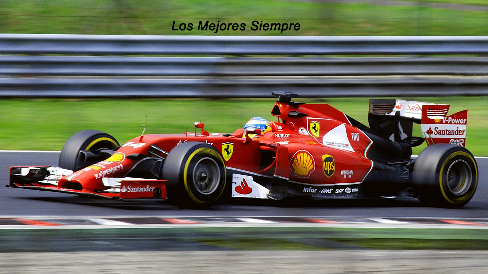
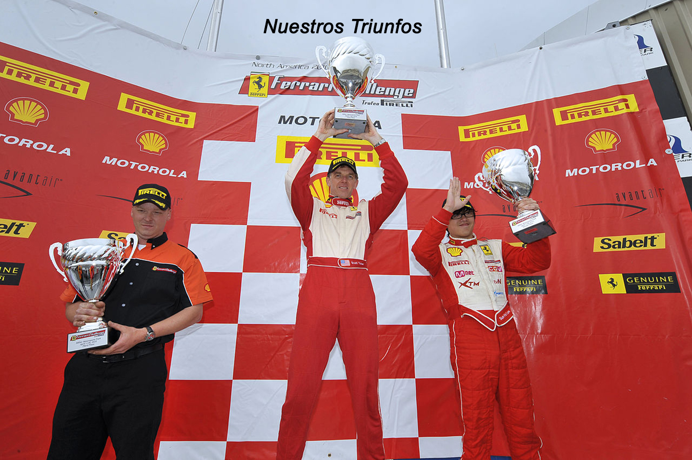
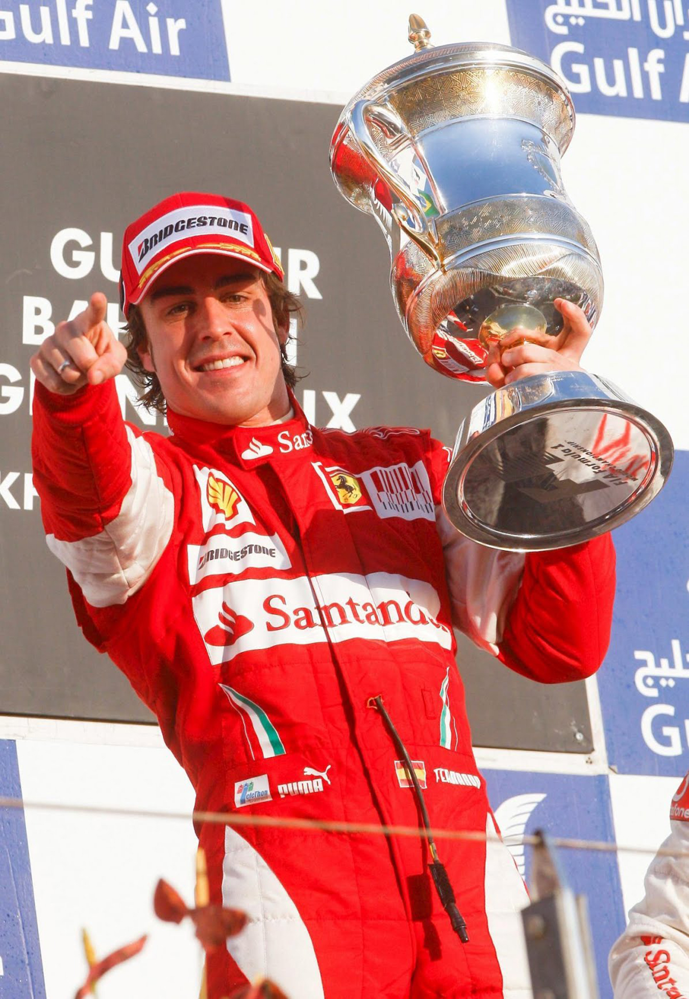
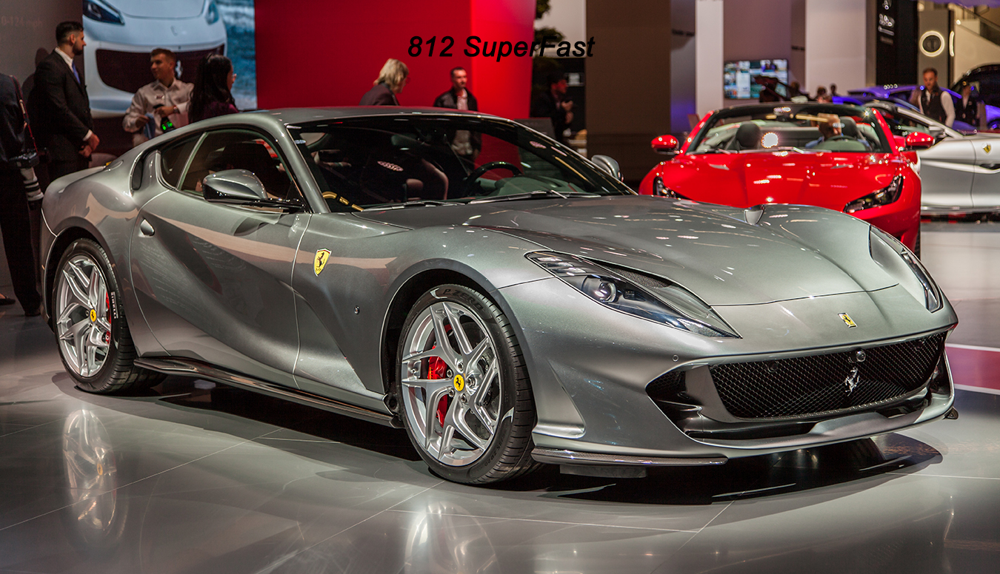
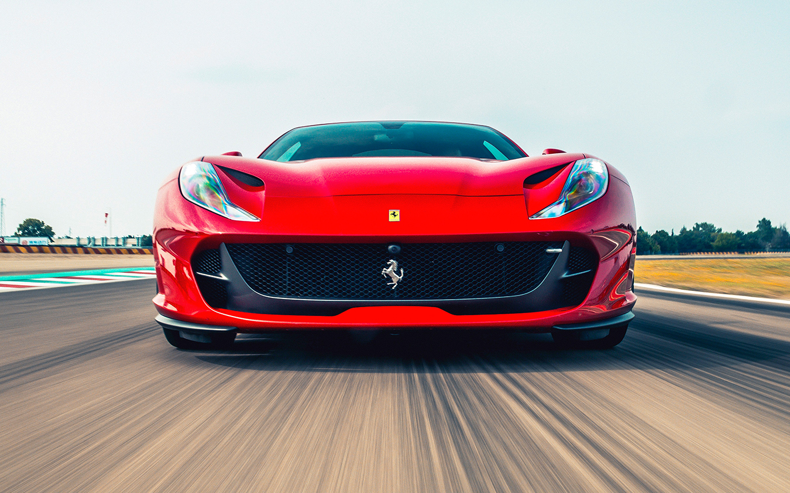
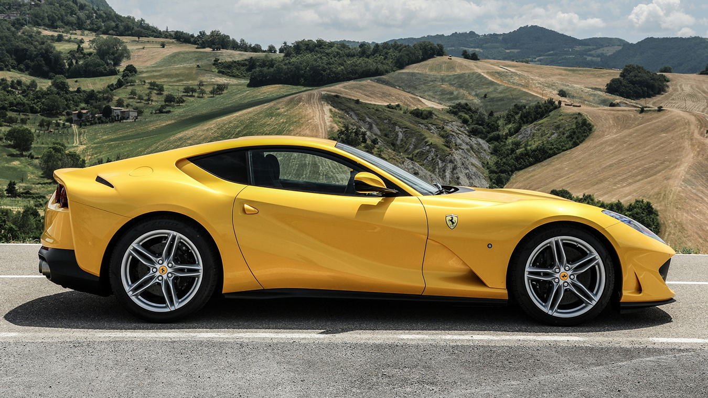
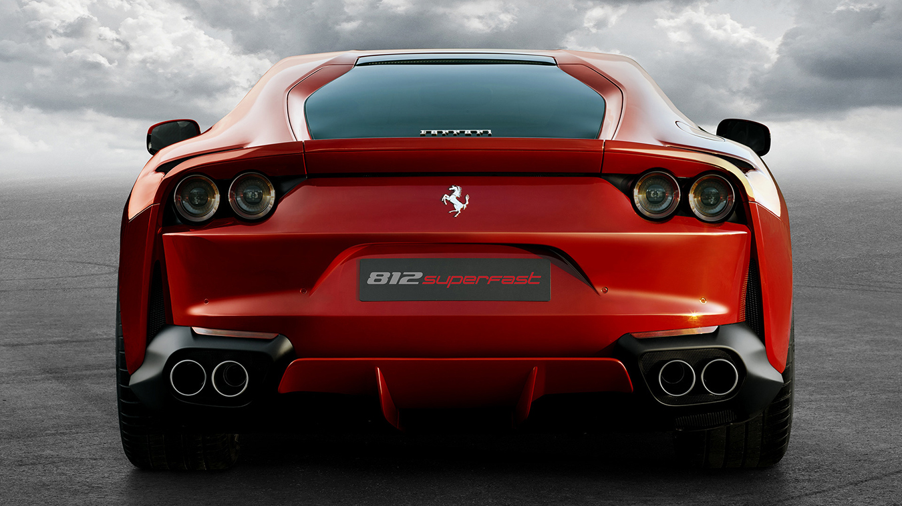

El LaFerrari es el primer coche con tecnología híbrida en la historia de Maranello. El motor V12 de
6262cc ofrece 800 CV mientras que el motor eléctrico añade 120 KW (163 CV) para sumár más de 960 CV.
Gracias al enorme salto tecnológico que aporta el sistema HY-KERS, el LaFerrari es el vehículo de
mayor rendimiento y eficiencia jamás construido en la historia de Ferrari.
El motor V12 de 6262cc ofrece 800 CV mientras que el motor eléctrico añade 120 KW (163 CV) para
sumár más de 960 CV
EL MOTOR ASPIRADO MAS POTENTE JAMÁS USADO EN UN FERRARI DE CARRETERA
Además de producir 800 CV, el V12 gira hasta 9250 rpm garantizando un rendimiento y un placer de
conducción fantástico junto con el inconfundible sonido de un motor Ferrari V12. Estos resultados
alcanzados han sido en parte debidos al trabajo desarrollado en tres áreas: volumétrica, mecánica y
de eficiencia en la combustión.
LA AERODINÁMICA JUEGA UN PAPEL ESENCIAL EN EL EXCEPCIONAL RENDIMIENTO DE LA FERRARI
La arquitectura de LaFerrari representa la cima de la innovación incluso tomando como referencia los
legendarios estandares de Ferrari. El objetivo era incrementar la eficiencia aerodinámica,
alcanzando una distribución ideal de pesos, bajando el centro de gravedad del coche la máximo
posible, y lo más importante de todo, integrando el conjunto a la perfección con el sistema
híbrido.Todo ello y mucho más ha sido logrado sin afectar el espacio de cabina, su comfort o
accesibilidad

Estamos Grabados Desde El Inicio
La primera participación de Ferrari en Fórmula 1 fue en el Gran Premio de Mónaco de 1950, con el
Tipo
125 F1. Ferrari es considerado uno de los cuatro grandes equipos de Fórmula 1, junto con Williams,
McLaren y Mercedes. Es el equipo activo más antiguo del campeonato, y es el que ha conseguido más
victorias, campeonatos de pilotos y campeonatos de constructores . Ha contado con muchos de
los pilotos más destacados de la historia de la Fórmula 1 como Michael Schumacher, Niki Lauda, Juan
Manuel Fangio, Alain Prost, Nigel Mansell, Gilles Villeneuve, Kimi Räikkönen, Sebastian Vettel y
Fernando Alonso, entre otros. Los pilotos actuales son Sebastian Vettel y Charles Leclerc. El
director del equipo es Mattia Binotto.
En sport prototipos y gran turismos, Ferrari ha obtenido nueve victorias absolutas en las 24 Horas
de Le Mans, ocho en la Mille Miglia y siete en la Targa Florio; además ha conquistado múltiples
títulos de constructores en el Campeonato Mundial de Resistencia.
Ferrari siempre ha producido los motores para sus propios monoplazas de Fórmula 1, y también ha
suministrado motores a otros equipos. Previamente, Ferrari proporcionaba sus motores para Minardi
(1991), Scuderia Italia (1992-1993), Sauber (1997-2005 con motores llamados Petronas, y 2010-2018),
Prost (2001, llamados Acer), Red Bull (2006), Spyker (2007) Force India (2008), Toro Rosso
(2007-2013, 2016) y Marussia (2014-2015). En la temporada 2020 provee motores a Haas y Alfa
Romeo.
Fuera de sus chasis, Ferrari ha ganado un solo Gran Premio, el de Italia 2008 con Toro Rosso.



EL MÁS POTENTE Y RÁPIDO FERRARI HASTA LA FECHA
El primer y más complicado desafío que Ferrari tiene siempre que afrontar cuando decide desarrollar
un nuevo modelo es llegar más lejos aún que los logros ya obtenidos. Este reto se hace aún más duro
cuando la tarea implica diseñar un nuevo motor de 12 cilindros, la unidad de potencia que alumbró el
nacimiento de la gloriosa historia del Cavalino Rampante hace 7o años en 1947. En esta ocasión, la
minuciosa investigación y desarrollo que realiza siempre Ferrari volcando en ingeniería todo su
know-how adquirido en pista ha dado lugar al 812 Superfast, diseñado para ofrecer a sus conductores
tanto prestaciones inigualables como una experiencia de conducción más excepcional y satisfactoria
posible. Impulsado por sus 800 cv, 60 más que el F12berlinetta, el 812 Superfast es el Ferrari de
carretera más potente y rápido jamás construido (con la excepción, por supuesto, de las series
especiales limitadas de 12 cilindros con motor central trasero). El 812 Superfast abre una nueva era
en la historia de los Ferrari de 12 cilindros, y lo hace tomando como base el valioso legado del
F12berlinetta y F12tdf. Para exprimir al máximo esta inmensa potencia y garantizar la perfecta
distribución de pesos, el coche aprovecha una estructura transeje altamente evolucionada que se
acopla al motor central delantero con transmisión trasera.

POTENCIA DE SALIDA RECORD DE 800 CV A 8.500 REV/MIN
En la fase de desarrollo, los ingenieros de Ferrari se marcaron el objetivo de superar la potencia
específica de salida del motor V12 del del F12berlinetta
MEJORANDO EL RENDIMIENTO
El diseño aerodinámico del 812 Superfast es parte del compromiso continuo de Ferrari en mejorar
constantemente el rendimiento de cada uno de sus nuevos modelos, tanto en términos de velocidad como
en
dinámica del vehículo, para asegurar una experiencia de conducción inigualable.
PRIMER FERRARI CON ELECTRIC POWER STEERING

